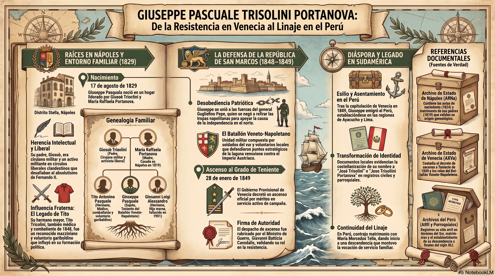
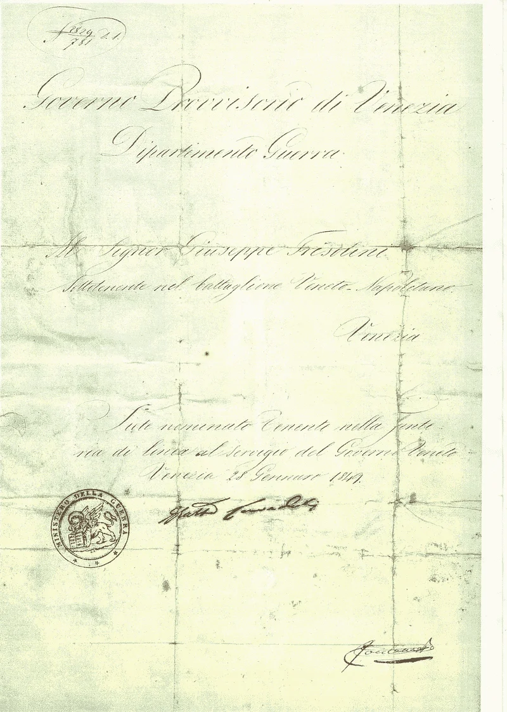

Giuseppe Pascuale Trisolini Portanova
La Biografía Completa: El Héroe del Risorgimiento
Prólogo: El Espíritu de una Época

Del Risorgimiento al Exilio
En los albores del siglo diecinueve, mientras Europa se estremecía bajo el impacto de las ideas revolucionarias, un pequeño reino al sur de Italia permanecía atrapado en el ámbar del absolutismo borbónico. Fue en esta Italia fragmentada, sojuzgada y dormida, donde nació un hombre cuyo nombre ha de resonar en los anales de la libertad: Giuseppe Pascuale Trisolini Portanova, el oficial que eligió a su patria por encima de su corona, la dignidad por encima del trono, y la inmortalidad por encima de la seguridad.
Esta es su historia. La historia de un dilema moral que define a una nación. La historia de un joven que, en el instante decisivo, respondió al llamado de la Historia con un acto de insumisión heroica que lo llevaría desde los salones aristocráticos de Nápoles hasta las trincheras de fuego de Venecia, y finalmente al destierro en tierras americanas.
Capítulo I: La Herencia Ideológica
Las Semillas de la Libertad Sembradas en Italia
Para comprender a Giuseppe Trisolini Portanova, debemos remontarnos a un momento que marcó para siempre el destino de Italia: la llegada de Napoleón Bonaparte.
A fines del siglo dieciocho, Italia no era una nación, sino un mosaico de estados divididos, débiles y sometidos a potencias extranjeras. Los Habsburgo austriacos controlaban el norte. Los Borbones españoles —y luego franceses— gobernaban el sur. Los Papas reinaban en el centro. Y en toda la península, la aristocracia feudal mantenía al pueblo en cadenas de ignorancia y superstición.
Pero en 1796, como una tempestad que barre toda la corrupción de siglos, llegó Napoleón.
Las legiones francesas no solo conquistaron Italia con la punta de sus espadas. Trajeron consigo las ideas que habían incendiado Francia: libertad, igualdad y fraternidad. Trajeron códigos civiles modernos que barrieron con los restos del feudalismo. Trajeron la noción revolucionaria de que un hombre no era un siervo del estado, sino un ciudadano con derechos inalienables. Trajeron, en suma, la primera visión coherente de Italia como nación única.
Durante quince años, mientras Napoleón reinó en Europa, Italia experimentó un despertar. Se crearon repúblicas hermanas. Se reclutó a jóvenes italianos en los ejércitos napoleónicos. Se fomentó un orgullo nacional incipiente. En universidades y cafés, en salones aristocráticos y callejuelas populares, resonó una pregunta nueva y peligrosa: ¿Por qué Italia no podría ser libre?
En 1815, después de Waterloo, la reacción fue brutal. El Congreso de Viena intentó borrar el sueño napoleónico como si nunca hubiera existido. Restauró las monarquías absolutas. Reestableció la fragmentación. Metió a Italia bajo la bota de nuevo.
Pero no pudo borrar las ideas.
A través de las redes secretas de la Carbonería y el joven movimiento liberal italiano, el espíritu de la Revolución Francesa continuó circulando por las venas de una generación de jóvenes italianos. Ellos eran los hijos del sueño napoleónico, nacidos en una Italia brevemente libre, condenados a vivir en una Italia nuevamente encadenada. Esta contradicción iba a desgarrar sus almas y convertirlos en revolucionarios.
Giuseppe Pascuale Trisolini Portanova sería uno de ellos. Un hijo de esa época de transición. Criado en el recuerdo borroso de la gloria napoleónica y en la frustración de la restauración absolutista. Su generación crecería escuchando historias de padres y abuelos sobre los días en que Italia fue libre, en que las ideas de la Revolución circulaban libremente, en que un hombre podía imaginar que su patria sería grande y unida.
Estas historias serían la brújula de su vida. Estas ideas, la causa de su exilio.

Donde el padre de Giuseppe, Giosuè Trisolini, ejerció como Médico Cirujano durante muchos años

Giuseppe Pascuale Trisolini Portanova - 17 de agosto de 1829
Capítulo II: En el Corazón del Despotismo
El Nápoles Borbónico y el Nacimiento de un Patriota

(Oficial de la República de San Marco)
En el año de 1829, en la ciudad de Nápoles, capital del Reino de las Dos Sicilias, nació un niño que llevaría consigo el destino de su patria. Su nombre era Giuseppe Pascuale Trisolini Portanova. Su padre, Giosuè Trisolini, era un hombre de posición moderada en la sociedad napolitana: ni de la altísima aristocracia, pero sí integrado en círculos de cierta influencia intelectual y administrativa. Su madre, Raffaela Portanova, provenía de una familia ligada al comercio y a tradiciones de pensamiento liberal que, en el Reino de las Dos Sicilias, debían ocultarse como un secreto de confesión.
Nápoles en 1829 era una ciudad contradictoria. Residencia de un rey —Fernando II, que aún no había revelado su verdadera naturaleza tiránica— que se presentaba como reformador. Centro de una vida cultural exuberante, con teatros, tertulias literarias, y círculos de intelectuales que aún susurraban las ideas de los ilustrados. Pero también una capital donde la policía secreta rondaba las esquinas, donde los periódicos estaban censurados, donde la libertad de expresión era un lujo mortal.
En esta Nápoles, Giuseppe Trisolini creció como muchos jóvenes de su clase: educado por tutores privados en lenguas clásicas, literatura, historia militar e ideales de honor caballeresco. Su padre, aunque monárquico de corazón, no era un obtuso reaccionario. Giosuè Trisolini permitía que en su casa circularan libros prohibidos. Permitía que sus hijos escucharan conversaciones de amigos que, en voz baja, criticaban los abusos del gobierno. No era un revolucionario, pero era un hombre que comprendía que el reino necesitaba cambios.
Giuseppe absorbió estas lecciones como el terreno árido absorbe el agua de lluvia después de la sequía. Leyó a Maquiavelo y a Montesquieu. Estudió las matemáticas de la artillería moderna. Admiró los grabados de Napoleón que circulaban clandestinamente. Escuchó historias sobre el breve período de la República Partenopea, aquella efímera república revolucionaria de 1799 que había sido sofocada en sangre. Comprendió, lentamente, que vivía en una prisión dorada. Que su patria era un esclavo. Que la legitimidad del rey provenía no de la voluntad del pueblo, sino del tradicional derecho divino y de las balas de sus soldados.
Mientras Giuseppe atravesaba su adolescencia, el reinado de Fernando II se endurecía. Aquel monarca que había prometido reformas se reveló como lo que verdaderamente era: un reaccionario de la peor especie, un Rey Bomba que prefería destruir su propio reino antes que permitir un ápice de libertad. Encarcelaba a intelectuales por sedición. Prohibía las sociedades secretas. Cerraba los ojos a la miseria del pueblo mientras su corte se revolcaba en lujos.
Para un joven de talento y sensibilidad como Giuseppe, este espectáculo fue intolerable. La contradicción entre los ideales que había internalizado —la igualdad, la justicia, la dignidad humana— y la realidad de un despotismo feudal, se hizo cada vez más lacerante.
Así, cuando llegó el año fatídico de 1848, Giuseppe Trisolini Portanova no era un hombre político en busca de carrera. Era un oficial militar joven, entrenado en las tradiciones castrenses, criado en la lealtad monárquica. Pero en lo profundo de su alma ardía algo más fuerte que la lealtad al trono: la lealtad a la Historia, a la justicia, a Italia.
Este hombre estaba a punto de vivir el momento en que esas dos lealtades entrarían en conflicto irreconciliable.
Capítulo III: Formación Militar - La Academia de la Nunziatella
Los Cimientos de un Oficial Revolucionario
Giuseppe Pascuale Trisolini Portanova no fue un militar improvisado. Su formación como oficial fue rigurosa y en una de las instituciones militares más prestigiosas del Reino de las Dos Sicilias: la Real Academia Militar de la Nunziatella, ubicada en Nápoles.
La Nunziatella era más que una escuela. Era un semillero de ideales, un lugar donde jóvenes de familias aristocráticas y de la burguesía ilustrada aprendían no solo tácticas militares, sino también los principios del honor, la disciplina y el liderazgo. Fundada en 1787, la Academia había sido moldeada por las ideas de la Revolución Francesa y el espíritu de Napoleón. Sus aulas resonaban con debates sobre constitucionalismo, derechos civiles y la posibilidad de una Italia unida.
Educación Preparatoria: Tutores Privados y Formación Humanística
Antes de ingresar formalmente a la Nunziatella, Giuseppe recibió una educación privada que lo preparó para la exigencia intelectual de la Academia. Sus tutores le enseñaron:
- Lenguas clásicas — Latín e italiano, esenciales para comprender la historia militar y la diplomacia
- Literatura y filosofía — Donde absorbió ideas de Montesquieu, Rousseau y otros pensadores que cuestionaban el absolutismo
- Historia militar — Estudiando campañas de Aníbal, César y especialmente Napoleón, cuya carrera militar era admirada en secreto entre los liberales italianos
- Ideales de honor caballeresco — Una formación que enfatizaba la lealtad, el deber y la integridad moral
Esta combinación de educación humanística y militar creó en Giuseppe un tipo de oficial raro: uno que podía pensar críticamente, cuestionar órdenes injustas, y entender que la verdadera lealtad a veces significa desobedecer a quien te da órdenes.
La Academia de la Nunziatella: Donde Nació una Generación de Patriotas
En la Nunziatella, Giuseppe compartió aulas y dormitorios con hombres que, como él, llegarían a ser legendarios en la historia del Risorgimiento italiano. La Academia no era simplemente un centro de instrucción militar; era un incubador de revolución.
Sus compañeros de clase más notables fueron:
Enrico Cosenz (1820-1898)
Capitán de artillería, comandante del frente de ataque en Forte Marghera. Cosenz se distinguió por su valentía bajo fuego y su dedicación absoluta a la causa de Italia. Tras el exilio, fue uno de los pocos que logró regresar para participar en la unificación italiana bajo Garibaldi. Eventualmente se convirtió en General y Ministro de la Guerra de la Italia unificada. Su carrera demuestra que el sacrificio de 1848-1849 no fue en vano.
Carlo Pisacane (1818-1857)
Oficial e intelectual revolucionario. Pisacane era diferente de sus compañeros: combinaba habilidades militares con un pensamiento político sofisticado. Escribía sobre la necesidad de vincular la liberación de Italia con la justicia social. Tras Venecia, continuó la lucha en la República Romana y luego organizó la Expedición de Sapri. Murió como mártir en 1857, pero su legado como pensador revolucionario inspiró generaciones posteriores.
Girolamo Ulloa (Coronel)
Comandante formal de Forte Marghera durante el asedio. Ulloa fue el responsable oficial de la defensa de la fortaleza durante los brutales 22 días de bombardeo austriaco. Trabajó directamente con Trisolini en las operaciones defensivas y compartió con él la experiencia de llevar a hombres agotados, hambrientos y enfermos a mantener sus posiciones bajo fuego incesante.
Estos hombres no eran simples militares: eran intelectuales en uniforme, hombres que habían comprendido que la verdadera libertad era más importante que la carrera militar. La Nunziatella los había preparado no solo para ganar batallas, sino para cuestionar las órdenes cuando esas órdenes violaban principios superiores de justicia y libertad.
Graduación y Ascenso a Subteniente
Giuseppe se graduó de la Academia con el rango de Subteniente, calificación que reflejaba tanto su competencia académica como sus habilidades tácticas. A diferencia de muchos oficiales de la época, cuyo avance dependía de conexiones políticas y antigüedad, Trisolini había demostrado en la Academia que poseía las cualidades de un oficial verdadero:
- Disciplina intelectual — Capacidad para dominar materias complejas de táctica, estrategia e historia militar
- Liderazgo natural — Compañeros e instructores reconocían su capacidad para inspirar confianza
- Integridad moral — La reputación de ser un hombre de principios, no solo de ambición
- Valentía física — Demostraba en los ejercicios que no pedía a sus hombres lo que no estaba dispuesto a hacer él mismo
Una Generación Marcada por la Historia
Lo notable de Giuseppe Trisolini y sus compañeros de la Nunziatella fue esto: fueron formados para obedecer órdenes, pero educados para pensar por sí mismos. La Academia no los preparó solo para defender un reino; los preparó para defender una idea: la idea de Italia como nación libre.
Cuando, en 1848, recibieron la orden de Fernando II de retornar a Nápoles mientras Venecia se defendía, sus compañeros de la Nunziatella enfrentaron un dilema que definía sus almas. ¿Obedecer al rey que los había educado? ¿O servir a la causa por la cual habían sido educados realmente?
Giuseppe eligió. Y en esa elección, demostró que la Nunziatella no había fracasado. Había triunfado. Había producido exactamente lo que pretendía: oficiales que entendían que la verdadera lealtad militar no es al uniforme, sino a los principios por los cuales el uniforme debería existir.
Capítulo IV: El Relámpago Revolucionario
1848 y el Despertar de la Esperanza
El año 1848 fue el año en que Europa entera se levantó en armas. De París a Berlín, de Viena a Venecia, una ola de revoluciones barrió a los antiguos regímenes. Los pueblos, hartos de décadas de represión, exigieron constituciones, parlamentos, libertades civiles. Fue como si todo el resentimiento acumulado desde 1815, desde la restauración absolutista tras Waterloo, estallara simultáneamente en mil fuegos revolucionarios.
Italia, dormida durante tres décadas, despertó bruscamente de su letargo.
En el Piamonte, el rey Carlos Alberto, sorprendentemente, accedió a promulgar una constitución. En Toscana, el Gran Duque hizo concesiones liberales. Hasta el Papa, en Roma, pareció simpatizar con las demandas de reforma. Pero fue en Venecia, la República Serenísima sometida bajo el tacón austriaco durante treinta y tres años, donde el fuego revolucionario alcanzó su máxima intensidad.
En marzo de 1848, los venecianos se levantaron. Expulsaron a los austriacos. Restauraron la República de San Marco, la gloriosa república medieval que había sido asfixiada por Napoleón y repartida a Austria en el Tratado de Viena. Fue un acto de pura audacia histórica. Era como si un fantasma glorioso hubiera vuelto a la vida.
El mensaje atravesó Italia como un rayo: Venecia es libre. Italia puede ser libre.
En Nápoles, la noticia fue recibida con explosiones de júbilo. Las masas llenaron las calles. Los liberales creyeron que su momento había llegado finalmente. Incluso el Rey Fernando II, sorprendido por la magnitud del movimiento revolucionario en toda Europa, tuvo que ceder. En febrero de 1848, promulgó una constitución —la primera en la historia del reino. Un parlamento, elegido por sufragio limitado pero real, fue convocado.
Para jóvenes como Giuseppe Trisolini, fue como si el cielo se hubiera abierto. Finalmente, Italia podría unirse. Finalmente, el pueblo podría tener voz. Finalmente, la nación podría ser libre.
La Causa Común: Italia contra el Austriaco
Rápidamente, la revolución napolitana se vinculó con la causa mayor: la expulsión de Austria de Italia. Si Venecia había podido expulsar a los austriacos, ¿por qué no toda Italia?
En abril de 1848, el Rey de Piamonte, Carlos Alberto, declaró la guerra a Austria. Los patriotas italianos vieron en su ejército la punta de lanza de la unificación. Tropas piamontesas marcharon hacia Lombardía. La revuelta se extendió por todo el norte.
Fue en este contexto que el Reino de las Dos Sicilias, bajo presión de la opinión pública revolucionaria, decidió enviar un cuerpo expedicionario napolitano para apoyar la causa italiana contra Austria. No era altruismo. Era que el sentimiento patriótico había alcanzado tal intensidad que incluso el gobierno, temeroso de perder el control de las masas, tuvo que hacer una concesión: "Muy bien, enviaremos tropas al norte. Pero siempre bajo control del trono, naturalmente."
En mayo de 1848, Giuseppe Pascuale Trisolini Portanova, entonces un joven oficial con grado de subteniente, recibió la orden de marchar al norte con el cuerpo expedicionario napolitano. Era un honor. Era un deber. Pero, por encima de todo, era la oportunidad que un patriota joven como él había estado esperando toda su vida.
Se preparó para partir. Abrazó a su familia. Se imaginó a sí mismo bajo las murallas de Venecia, luchando por la libertad de Italia, escribiendo una página gloriosa en los anales de la historia.
No sabía, en aquel momento, que su rey estaba a punto de traicionar a la revolución. Que en pocas semanas, Fernando II ordenaría el regreso de todas las tropas napolitanas. Que le pediría que eligiera entre la obediencia al trono y la lealtad a la patria.
No sabía que tendría que elegir la inmortalidad.
Capítulo V: La Marcha del Idealismo
Hacia el Norte, Hacia la Gloria
La marcha hacia el norte fue como un sueño. Tropas napolitanas bien entrenadas, infantes de marina, artilleros. Aproximadamente quince mil hombres bajo el mando del General Guglielmo Pepe, un veterano de las guerras napoleónicas que había conservado el espíritu de libertad de aquella época. Pepe era una leyenda viva para los jóvenes revolucionarios: había luchado en Rusia bajo Napoleón, había visto Europa libre, había sufrido bajo la restauración, y ahora, en sus sesenta años, estaba viendo el resurgimiento de la causa de la libertad.
Giuseppe Trisolini marchaba entre estos hombres con el corazón en fuego. Por fin, después de años de frustración, de leer libros prohibidos en secreto, de discutir en voz baja sobre Italia en las tertulias privadas, estaba participando activamente en la liberación de su patria.
Las ciudades por las que pasaban los napolitanos estallaban en vítores. En Roma, en la Toscana, en Bolonia. Los pueblos los recibían como libertadores. Las mujeres lanzaban flores. Los hombres gritaban ¡Viva Italia! ¡Viva la libertad!
Era la Italia que Giuseppe Trisolini había imaginado en sus sueños adolescentes. Una Italia unida en la causa común. Una Italia que se levantaba de sus cadenas.
Mientras marchaban hacia el norte, Giuseppe no sabía que el drama de la traición ya se estaba fraguando. En Nápoles, las fuerzas conservadoras cercaban al rey. Los nobles, asustados por la revolución, le susurraban que había cometido un error al permitir la constitución. Que enviar tropas al norte era una locura revolucionaria. Que debía restaurar el orden absolutista.
Fernando II escuchaba estas voces. Y cedía a ellas.
Capítulo VI: El Puñal en la Espalda
La Contrarrevolución Monárquica del 15 de Mayo
El 15 de mayo de 1848, mientras Giuseppe Trisolini y sus compañeros aún viajaban hacia el norte, Fernando II cometió el acto que definiría su reinado y cambiaría el curso de la historia para Giuseppe.
El rey, envalentonado por sus consejeros reaccionarios y alarmado por la intensidad del movimiento revolucionario en su capital, decidió ejecutar un golpe de estado. En un acto de pura audacia tiránica, disolvió el parlamento que apenas hacía tres meses había creado. Anuló la constitución. Suspendió la libertad de prensa. Y, en el colmo de la humillación, ordenó el retorno inmediato de todas las fuerzas napolitanas que estaban luchando en el norte por la libertad.
Fue un mensaje claro: "No soy un rey constitucional. Soy un rey absoluto. Y se acabó el juego de la libertad."
Pero había un problema. Las órdenes de retorno llegaron tarde. Giuseppe Trisolini y la mayoría del cuerpo expedicionario napolitano ya estaban comprometidos en las operaciones militares del norte. El General Guglielmo Pepe, rodeado de jóvenes oficiales patriotas, comprendió inmediatamente lo que estaba sucediendo.
Recibió una orden explícita del gobierno napolitano: retornar inmediatamente al sur con todas las tropas.
Lo que sucedió a continuación fue un momento que cambió para siempre el significado de la lealtad militar.
Capítulo VII: El Gran Dilema
Cuando la Obediencia se Convierte en Traición
Giuseppe Trisolini, entonces un joven oficial de veintitrés años, se enfrentó a una disyuntiva que casi ningún militar afronta en su vida. Una orden directa de su rey versus la voz de su conciencia. El uniforme que portaba versus la patria que amaba.
Los órdenes eran claros e inapelables. Debía retornar con sus compañeros al sur. Debía obedecer a su monarca. Debía abandonar el norte en el momento en que Italia más lo necesitaba.
Pero hacer eso significaba algo más profundo. Significaba que era cómplice de la traición. Que participaba en el colapso de la causa de la libertad italiana. Que permitía que Fernando II ganara la batalla contra la Historia.
Giuseppe Trisolini miró a su general, Guglielmo Pepe. Y vio en los ojos del viejo soldado la misma lucha interna que él experimentaba. Pepe, quien había dedicado su vida a la causa de Italia, quien había visto el sueño napoleónico, quien comprendía que esta era la última oportunidad de su generación para verla libre.
Pepe tomó la decisión.
En un acto de sublime insubordinación, el General Guglielmo Pepe declinó ejecutar la orden de retorno. A través de una combinación de liderazgo carismático y la convicción compartida de oficiales jóvenes como Giuseppe Trisolini Portanova, Pepe logró desviar a aproximadamente dos mil hombres —principalmente voluntarios y miembros de la Guardia Nacional— para continuar hacia Venecia. La mayoría del grueso expedicionario, obedeciendo la disciplina institucional, regresó al sur.
Los que decidieron quedarse lo hicieron conscientes de las consecuencias. Era una decisión fría, racional, heroica. Comprendían exactamente lo que significaba: que estaban cometiendo alta traición a los ojos de la ley. Que, si el golpe de estado de Fernando II triunfaba —y los patriotas comprendían que era probable que así fuera— ellos nunca podrían regresar a Nápoles vivos. Que sus familias serían castigadas. Que sus nombres serían maldecidos en la corte real.
Pero también comprendían algo más importante: que la historia les pediría cuentas. Que, si se retiraban ahora, serían cómplices de la muerte de Italia en su cuna. Que su inmortalidad dependía de esta elección.
Giuseppe Trisolini, en ese instante, eligió la inmortalidad.
"No regresaré," dijo a su general. "La orden que recibimos de Nápoles es una orden de traición. Continuaré aquí, con usted, por Italia."
Era una sentencia de exilio. Una sentencia de muerte, potencialmente. Pero era también un acto de pura libertad moral.
Capítulo VIII: A las Murallas de Venecia
La Incorporación Gloriosa al Batallón de Libertad

Mostrando las posiciones defensivas revolucionarias
Cuando Giuseppe Trisolini y el General Guglielmo Pepe llegaron a Venecia con sus tropas napolitanas, la ciudad ya estaba bajo asedio. Los austriacos, bajo el mando del Mariscal Radetzky —el viejo águila de las guerras napoleónicas, ahora en su vejez pero aún temible— habían rodeado la laguna. Habían cortado los suministros. Preparaban un bombardeo masivo que iba a convertir la ciudad en un infierno.
Pero cuando los defensores de Venecia supieron que cuatro mil napolitanos, tropas que habían desafiado a su propio rey, estaban llegando para reforzar su línea, el júbilo fue indescriptible.
Las campanas de la Basilica di San Marco repicaron en gloria. Las multitudes venecianas se congregaron en las plazas. Cuando Giuseppe Trisolini y sus compañeros napolitanos marcharon a través de las calles estrechas de Venecia, fueron recibidos con aclamaciones que sonaron como música celestial después de semanas de terror y asedio.
¡Los napolitanos! ¡Han venido a defenderlos! ¡Han abandonado a su rey por Italia!
Fue un momento de gloria pura. Los venecianos comprendieron que no estaban solos. Que había otros italianos que también habían elegido la libertad. Que la causa de Italia era verdadera, tan verdadera que los hombres estaban dispuestos a renunciar a sus hogares, a sus familias, a su nacionalidad para defenderla.
Giuseppe Trisolini experimentó, en ese momento, la sensación más profunda de su vida: la sensación de estar en el lado correcto de la historia. De ser parte de algo mayor que él mismo. De participar en un momento que sería recordado por siglos.
La incorporación formal de las fuerzas napolitanas a la defensa de Venecia fue celebrada solemnemente. Pepe fue nombrado comandante de un sector crítico de las defensas. Giuseppe Trisolini, por su parte, fue asignado a tareas de máxima responsabilidad, participando en la reorganización táctica de las defensas.
Nunca supo que esta llegada gloriosa sería el prólogo de un infierno que estaba a punto de comenzar.
Capítulo IX: Sangre y Pólvora en el Véneto
La Reorganización de las Defensas (Mayo-Octubre 1848)

Condecoración por servicios en defensa de Venecia
Conforme pasaban los meses de 1848, quedó claro que la defensa de Venecia sería un asedio largo y brutal. Los austriacos no tenían prisa. Disponían de recursos ilimitados. Disponían del tiempo.
El Mariscal Radetzky, estratega consumado, sabía que el tiempo jugaría a su favor. Sabía que la ciudad se quedaría sin alimentos. Que los suministros médicos se agotarían. Que las enfermedades diezmarían a los defensores. Sabía que la república revolucionaria no tenía el poder económico ni militar para resistir indefinidamente.
Su estrategia era simple y letal: rodear, estrechar el cerco, y esperar a que se rindan.
Para contrarrestarlo, el comando revolucionario de Venecia tuvo que reorganizar sus fuerzas. Las tropas fueron redistribuidas. Se crearon batallones con funciones especializadas. Y fue en este contexto que nació el Batallón Veneto Napolitano, una unidad formada principalmente por los oficiales y soldados napolitanos que habían desafiado a su rey, junto con soldados venecianos de probada lealtad revolucionaria.
Giuseppe Trisolini fue designado como uno de los comandantes de sección de este batallón. No era el rango más alto, pero era una posición de gran responsabilidad. Era responsable de hombres. De su sobrevivencia. De la defensa de un sector del perímetro de la ciudad.
El Batallón Veneto Napolitano se convirtió en una unidad de élite, conocida por su disciplina y su ferocidad. Eran hombres que no tenían nada que perder excepto sus vidas, y que habían ya aceptado que probablemente perderían eso. Eran hombres que habían elegido la libertad, y que defenderían esa libertad literalmente hasta el último suspiro.
Giuseppe Trisolini lideraba a estos hombres, a través de su propio ejemplo, a través de su coraje sereno, a través de su dedicación absoluta a la causa.
Capítulo X: La Sortita de Mestre
El Último Acto de Defensa Ofensiva (27 de Octubre de 1848)
Aunque Giuseppe Trisolini no fue específicamente mencionado entre los comandantes de la Sortita de Mestre, es muy probable que participara como teniente en las fuerzas que salieron de Forte Marghera en aquella memorable madrugada del 27 de octubre de 1848.
Ese día, aproximadamente dos mil voluntarios divididos en tres columnas salieron del fuerte. El Batallón Veneto-Napolitano, bajo el mando del capitán Camillo Boldoni, marchaba como parte de la columna central junto con los Cacciatori del Sile y el Batallón Italia Libera. El General Guglielmo Pepe en persona dirigía la operación, junto con el Coronel Girolamo Ulloa, comandante de Marghera.
La Acción: Una Victoria Táctica Inesperada
La acción fue épica: los italianos capturaron Mestre, derrotaron una guarnición austriaca de aproximadamente 2,000-3,000 hombres, tomaron tres cañones, una docena de caballos, tres carros de municiones, y capturaron a más de 500 prisioneros austriacos. Las pérdidas italianas fueron de aproximadamente 87 muertos y 163 heridos. Fue un acto de pura audacia que restauró la moral revolucionaria después de meses de asedio.
Testimonio de Participante: Placido Aldighieri
Placido Aldighieri, voluntario mestrino que participó en la Sortita, escribió en sus memorias:
Este "Teniente" es muy posiblemente una referencia a Giuseppe Trisolini, quien en octubre de 1848 ya llevaba ese grado.
Significado Estratégico
La Sortita de Mestre fue la única victoria italiana después de meses de asedio defensivo. Demostró que el enemigo podía ser derrotado y que la causa de la libertad aún tenía poder ofensivo. Los patriotas se retiraron ordenadamente con 500 prisioneros y abundante botín, dejando a los austriacos atónitos ante la capacidad de sus enemigos para tomar la iniciativa.
Capítulo XI: La Ascensión del Héroe
El Ascenso a Teniente: El 28 de Enero de 1849

Gobierno Provisional de Venecia - 28 de enero de 1849
Traducción del Despacho:
Gobierno Provisorial de Venecia
Departamento de Guerra
Al Señor Giuseppe Trisolini
Sub Teniente del Batallón Veneto Napolitano
Venecia
Siendo nombrado Teniente de la región de Línea al servicio del Gobierno Veneto
Venecia 28 de Enero 1849
En los primeros meses de la defensa de Venecia, conforme los combates se intensificaban, Giuseppe Trisolini demostró una valentía que trascendía los protocolos militares ordinarios. En varias ocasiones, bajo fuego de artillería austriaca, lideró contraataques contra posiciones enemigas. Organizó defensas en puntos críticos. Inspiró a sus hombres con su presencia serena bajo el fuego.
El 28 de enero de 1849, en un acto que fue simultáneamente un reconocimiento y una cierta ironía histórica, el mando revolucionario de Venecia promovió formalmente a Giuseppe Pascuale Trisolini Portanova al grado de Teniente, en recompensa por su arrojo y dedicación en el combate.
Ya no era un simple subteniente. Ahora era oficialmente un Teniente de la República de San Marco. Era un honor que habría sido imposible obtener en el ejército napolitano, donde la promoción estaba ligada a años de servicio y a conexiones políticas. Aquí, en una república revolucionaria sitiada por austriacos, el mérito y la valentía eran las únicas monedas que contaban.
Para Giuseppe, este ascenso fue un bálsamo moral en medio de la tormenta que se avecinaba. Era la confirmación de que su desobediencia había sido justificada. Que la historia, al menos en este pequeño rincón de Italia sitiada, reconocía que había tomado la decisión correcta.
Pero el reconocimiento sería breve. El verdadero infierno estaba apenas a punto de comenzar.
Capítulo XII: El Infierno de Forte Marghera
El Asedio Formal y el Bombardeo Masivo
En abril de 1849, después de meses de combates de menor escala, Radetzky decidió que era hora de intensificar. Ordenó la iniciación de un asedio formal de Venecia. Y como preludio de este asedio, decidió bombardear Forte Marghera, la principal fortaleza defensiva de la ciudad.
Forte Marghera era una fortaleza de forma coronada, construida en los tiempos de Napoleón, ubicada en la laguna al norte de Venecia. Era un punto de extraordinaria importancia estratégica, porque desde allí se podía defender todo el acceso septentrional a la ciudad. La fortaleza estaba armada con aproximadamente ciento treinta bocas de fuego —noventa y cuatro cañones, nueve obuses, dieciséis morteros— y defendida por unos dos mil cuatrocientos defensores de todas las armas: infantes, artilleros, zapadores, y voluntarios venecianos.
Radetzky, bajo el comando del Barón Julius von Haynau, reunió una artillería de extraordinaria potencia. Reunió aproximadamente ciento cuarenta piezas de artillería de grueso calibre, dispuestas en semicírculo alrededor de la fortaleza. Docenas de cañones de 24 libras. Obuses. Morteros. La artillería austriaca construyó sucesivas paralelas de asedio siguiendo el método clásico de Vauban, avanzando gradualmente para romper las defensas.
Giuseppe Trisolini estaba en Forte Marghera cuando el bombardeo alcanzó su máxima intensidad.
A partir del 4 de mayo de 1849, el bombardeo comenzó. Durante veintidós días consecutivos, las murallas de la fortaleza fueron sometidas a un fuego sin igual en la época. Los austríacos lanzaron aproximadamente setenta mil proyectiles —balas, bombas, granadas, y cohetes de Congrève— contra la fortaleza. En los últimos tres días del asedio, el fuego alcanzó una intensidad aterradora. El humo era tan espeso que apenas se veía la mano delante de la cara. Los edificios dentro del fuerte estallaban en llamas. Las casematas, construidas décadas antes y supuestamente a prueba de bombas, se agrietaban bajo el incesante bombardeo.
Y en medio de este infierno, Giuseppe Trisolini hizo lo que un militar verdadero hace: su deber.
Corrió de un sector a otro de la fortaleza, organizando a los hombres. Ayudó a evacuar a los soldados heridos. Se exponía constantemente al fuego de los cañones austriacos. Los registros indican que en una posición clave, cuatro cabos de pieza murieron sucesivamente, reemplazados uno tras otro, mientras el enemigo mantenía su puntería sobre ese punto específico. Trisolini estuvo entre los que mantuvieron esa posición hasta el final.
Bajo fuego cruzado —de los cañones austriacos desde tierra y desde el aire mediante globos aerostáticos, de las fortificaciones sitiadas desde el sur— Giuseppe continuó cumpliendo su deber.
Pleácido Aldighieri, un veterano que estuvo en Forte Marghera durante el asedio, describe los últimos tres días así: "El tercer día fue propiamente una jornada de sangre que a nosotros nos costó bien cara. Durante el día no se había comido que poco queso y galletas. Estábamos cansados y agotados por la fatiga".
Los escritos de la época recuerdan a hombres como Trisolini así: oficiales jóvenes, de apenas veinte años, dirigiendo a los hombres con la calma de quienes ya habían aceptado la posibilidad de su propia muerte. Cada defensor de Marghera fue un héroe. Tal como escribió el historiador Radaelli: "Marghera resistió 22 días continuamente bombardeada; en los tres últimos días el ataque fue espantoso. Cada uno de sus defensores fue un héroe".
Capítulo XIII: La Retirada Estratégica
La Evacuación Táctica
Después de horas de bombardeo masivo, quedó claro que Forte Marghera no podría ser mantenido. El fuerte estaba siendo destruido. Las bajas eran terribles. Los suministros de municiones se estaban agotando rápidamente bajo la lluvia incesante de proyectiles austriacos.
El comando militar ordenó una retirada estratégica. No era una huida. Era una retirada táctica, ordenada y metódica, desde la fortaleza hacia el interior de la laguna de Venecia, hacia las defensas más compactas de la ciudad misma.
Giuseppe Trisolini lideró a sus hombres en esta retirada. Fue un momento crítico: la línea defensiva del norte estaba siendo abandonada. Pero la retirada fue ejecutada con profesionalismo. Los hombres mantuvieron la formación. Llevaban consigo las armas que podían salvar. Y cuando los últimos defensores abandonaron Forte Marghera, lo hicieron con dignidad, no en pánico.
Fue una de las últimas operaciones exitosas de la defensa de Venecia. Fue también un acto de puro profesionalismo militar, el tipo de maniobra que Radetzky mismo habría reconocido y admirado.
Giuseppe Trisolini y sus hombres se reintegraron a las defensas de la ciudad. El perímetro defensivo se estrechaba. Pero la resistencia continuaba.
Capítulo XIV: Los Últimos Fuegos
La Resistencia Final en la Laguna
En los meses finales de 1849, Venecia se convirtió en un infierno en tierra. No era solo el bombardeo constante. Era el hambre. El bloqueo naval austriaco había cortado completamente los suministros. Ningún barco podía entrar o salir de la laguna sin autorización austriaca.
Los venecianos y sus defensores comían ratones. Comían hierba. Comían cosas que no tienen nombre. La desnutrición fue debilitando a los hombres día a día.
Y entonces, como si los austriacos no hubieran sufrido bastante, Dios —o la Historia, o la Naturaleza, o simplemente la mala suerte— añadió otra plaga: el cólera.
La epidemia de cólera estalló en Venecia en agosto de 1849. Fue devastadora. Hombres que una hora antes gritaban consignas revolucionarias, pocas horas después estaban muertos, sus cuerpos aún calientes en las callejuelas de Venecia.
Giuseppe Trisolini, como todos los oficiales, tuvo que confrontar este enemigo invisible. Vio a sus hombres caer, no por las balas austriacas, sino por una enfermedad que no comprendían y que no podían combatir.
Pero hay más. En un gesto que parece sacado de la ópera, los austriacos no solo bombardeaban desde tierra. Utilizaban una novedad tecnológica de la época: globos aerostáticos militares. Desde estos globos, soltaban proyectiles que caían sobre la ciudad. Era un bombardeo desde el cielo. Era tecnología de guerra del futuro, y Venecia estaba siendo sometida a ella.
Giuseppe Trisolini y sus hombres, que apenas tenían para comer, que estaban muriendo de cólera, que estaban siendo bombardeados desde la tierra y desde el cielo, continuaron resistiendo.
Es difícil imaginar una prueba más extrema de la voluntad humana. Es difícil imaginar hombres que hubieran elegido perder todo, que estaban perdiendo todo, y que aun así se rehusaban a rendirse.
Giuseppe Trisolini, ahora un Teniente de veintitrés años, vio el rostro del horror absoluto en esos últimos meses de asedio. Vio la muerte en una docena de formas diferentes. Vio camaradas que amaba ser barridos por la enfermedad o pulverizados por artillería.
Y continuó resistiendo.
Capítulo XV: La Capitulación Honrosa
El Fin de un Sueño, la Inmortalidad de un Pueblo
En agosto de 1849, después de meses de asedio, después de la epidemia de cólera que había devastado a la ciudad, después del bombardeo incesante que había destruido edificios y vidas, la realidad fue ineludible:
Venecia no podía continuar.
Los suministros de alimentos se habían agotado completamente. Las municiones se estaban acabando. La población estaba diezmada por la enfermedad. Los hombres estaban demasiado débiles para combatir.
El 22 de agosto de 1849, el gobierno revolucionario de Venecia decidió que había llegado el momento de render las armas.
Fue una decisión que rompió corazones. Pero también fue una decisión honrosa. Porque Venecia no se rindió incondicionalmente. Negoció términos. Obtuvo garantías para la seguridad de los defensores. Se rindió como un pueblo que había combatido hasta el límite de sus fuerzas humanas, y que ahora, exhausto pero sin mancha de deshonor, se rendía.
Cuando los austriacos finalmente entraron a Venecia, encontraron una ciudad destrozada. Encontraron a hombres esqueléticos, a civiles muertos por hambre y enfermedad en las calles. Encontraron una república que había sacrificado todo, absolutamente todo, en el altar de la libertad.
Pero encontraron una ciudad que nunca había sido conquistada en el verdadero sentido de la palabra. Los venecianos se habían rendido, sí. Pero lo habían hecho con la cabeza en alto.
Giuseppe Trisolini, cuando Venecia se rindió, comprendió que un capítulo de su vida se cerraba. Un capítulo que había durado apenas catorce meses, pero que contenía más gloria, más sufrimiento, más significado, que la mayoría de las vidas enteras.
Capítulo XVI: El Exilio
La Salida: Hacia Tierras Desconocidas
Cuando Venecia se rindió el 22 de agosto de 1849, quedó claro que los oficiales que habían desobedecido a Fernando II, que habían cometido alta traición a los ojos de la corona borbónica, no podían simplemente regresar a Nápoles como si nada hubiera sucedido.
Fernando II había dejado clara su posición: cualquiera que hubiera desobedecido sus órdenes sería ejecutado o encarcelado de por vida si regresaba. Emitió un decreto de castigo severo: destitución fulminante, juicios por alta traición, pérdida de derechos civiles, confiscación de bienes, y proscripción perpetua. El General Guglielmo Pepe fue declarado traidor a la patria y despojado de sus grados militares.
Fue así que, en los días posteriores a la rendición de Venecia, comenzó uno de los éxodos más dramáticos de la historia del Risorgimento. Los defensores revolucionarios de Venecia —napolitanos, piamonteses, lombardos, toscanos— se enfrentaban a la realidad de que no podían regresar a sus hogares.
El General Guglielmo Pepe, junto con otros oficiales revolucionarios de renombre —Enrico Cosenz, el joven héroe de la defensa; Carlo Pisacane, el intelectual-soldado; y otros— comprendieron que debían exiliarse.
Pero, ¿a dónde ir? Europa entera estaba en contrarrevolución. La democracia había sido aplastada en todas partes. Los monarcas absolutistas retomaban el poder. Incluso el Reino de Piamonte, que había sido la esperanza de la unificación, había sido derrotado en la Batalla de Novara en marzo de 1849, obligando al Rey Carlos Alberto a abdicar en favor de su hijo Victor Emmanuel.
La única dirección era al Oeste. Al Nuevo Mundo. A las repúblicas americanas donde, se decía, aún brillaba la llama de la libertad.
Giuseppe Trisolini tomó esta decisión. No había vuelta atrás. No había rendición posible. El exilio era, en ese momento, la única forma de permanecer vivo. Fue incluido en los listados de prófugos del Estado, lo que conllevaba la condena a muerte o prisión perpetua en caso de poner un pie en Nápoles.
A través de intermediarios diplomáticos, se negociaron pasajes en buques de naciones neutrales. Navíos franceses y británicos acordaron transportar a los revolucionarios exiliados. Era un acto de solidaridad internacional con la causa de la libertad.
La Travesía Hacia Sudamérica
.webp)
(Años de exilio en Sudamérica)
Giuseppe Trisolini embarcó en uno de estos navíos, probablemente un barco francés o británico, en algún puerto del norte de Italia, en los últimos meses de 1849. La travesía hacia Sudamérica duraba meses. Era peligrosa, especialmente para hombres debilitados por el asedio, la hambruna y la enfermedad.
Pero Giuseppe sobrevivió al viaje. Como tantas cosas en su vida, desafió las probabilidades.
Cuando el barco finalmente ancló en un puerto sudamericano —probablemente en Perú, como indica la documentación histórica— Giuseppe Trisolini Portanova descendió a tierra como un hombre renacido. Ahora era un exiliado. Un proscrito. Un hombre al que se le había prohibido volver a su patria bajo pena de muerte.
Pero también era un hombre libre. Libre de la tiranía borbónica. Libre de la represión. Libre de las cadenas de un régimen que lo habría intentado silenciar o destruir.
Una Nueva Vida en Tierras Americanas
En Perú, Giuseppe Trisolini Portanova comenzó una nueva vida. Se estableció en la región de Huamanga, en la sierra de Ayacucho, integrándose notablemente en la sociedad peruana. Como muchos exiliados europeos del Risorgimento, aprovechó sus habilidades técnicas y militares para contribuir al desarrollo de la sociedad en la que se asentaba.
El 27 de enero de 1870, en Ayacucho, Giuseppe contrajo matrimonio con María Mercedes Tello Inchaústegui, una ciudadana peruana de respetable familia. El matrimonio fue celebrado en la Parroquia de Santa Ana, con la solemnidad que correspondía a un oficial de su condición.

Giuseppe Trisolini y María Mercedes Tello Inchaústegui - 27 de enero de 1870
De esta unión nacieron sus hijos, todos ellos nacidos en Perú. La descendencia de Giuseppe Trisolini Portanova echaría raíces profundas en la tierra andina. Sus hijos e hijas, nacidos en tierras americanas, nunca conocerían la Italia que su padre había sacrificado todo por defender. Pero llevarían en su sangre la memoria de ese sacrificio, transmitida de generación en generación.
Giuseppe Trisolini vivió en el exilio durante sesenta años. Aunque residía en Perú, nunca abandonó mentalmente la causa de Italia. Seguía las noticias de su patria desde Sudamérica. Cuando, en 1860-1861, la unificación italiana finalmente se realizó bajo Garibaldi y Cavour, Giuseppe supo que la sangre que había derramado en Venecia no había sido en vano.
Que otros hombres, continuando con el trabajo que él y sus compañeros habían comenzado, finalmente lograron lo que parecía imposible: hacer de Italia una nación unida y libre.
Giuseppe Pascuale Trisolini Portanova falleció el 9 de septiembre de 1909, a la edad de ochenta años, en Ayacucho, Perú. Fue enterrado en el Cementerio General de la ciudad. Aunque murió lejos de su patria, fue un hombre que vivió en paz consigo mismo, sabiendo que había hecho lo correcto en el momento en que más importaba.
Capítulo XVII: El Legado para Italia
La Italia Unificada: La Realización del Sueño
Irónicamente, Giuseppe Trisolini no viviría para ver el triunfo final de la causa por la que sacrificó tanto. No viviría para ver a Garibaldi desembarcar en Sicilia en 1860 con sus mil soldados, la "Expedición de los Mil", que conquistaría el sur y lo entregaría a Victor Emmanuel II. No viviría para ver la proclamación del Reino de Italia en 1861. No viviría para ver a Roma finalmente incorporada, y a Roma convertida en la capital de una Italia finalmente unificada.
Pero sus actos lo hicieron.
Porque lo que Giuseppe hizo en 1849, lo que hizo el General Pepe, lo que hicieron los jóvenes revolucionarios que desobedecieron a sus reyes, fue demostrar que era posible. Que era posible elegir Italia por encima de la lealtad dinástica. Que era posible crear una unidad nacional basada en algo más que lazos de sangre feudal: basada en ideales de libertad y justicia.
La República de San Marco duró apenas meses. Pero esos meses echaron raíces que germinarían en la Unificación Italiana.
La Inmortalidad de Giuseppe Trisolini Portanova
Giuseppe Pascuale Trisolini Portanova desapareció de los registros públicos. No hay estatuas erigidas en su honor. No hay plazas públicas que lleven su nombre. La historia, que es frecuentemente injusta, lo relegó a los márgenes.
Pero en los archivos de la historia del Risorgimento, en los registros de la República de San Marco, en las memorias de quienes conocieron a los hombres que combatieron en Venecia, su nombre permanece. Su acto de insubordinación heroica permanece. Su elección de la patria por encima de la corona permanece.
Giuseppe Trisolini Portanova representa algo que va más allá de las batallas y los asedios. Representa la supremacía de la conciencia sobre la jerarquía. Representa la idea de que un hombre puede estar obligado a elegir entre obedecer al poder y servir a la verdad. Y que, cuando se ve forzado a hacer esa elección, la verdadera lealtad está siempre con la historia, con la justicia, con la patria.
Cuando Fernando II, Rey de las Dos Sicilias, murió unos años después de estos eventos, su reino lo hizo con él. El Reino de las Dos Sicilias fue barrido por la historia. Sus monarcas son recordados, si es que se les recuerda, como símbolos de un orden corrupto y condenado.
Pero Giuseppe Trisolini, un simple oficial que desobedeció a ese rey, es recordado como estaba destinado a serlo: como un héroe. No porque ganara batallas —Venecia se rindió—. Sino porque eligió la libertad cuando pudo haber elegido la comodidad. Porque enfrentó la muerte cuando pudo haberse evitado. Porque creyó, con la intensidad de la fe religiosa, que Italia merecía ser libre.
La Descendencia en América: Raíces que Crecen en Tierras Extranjeras
Los hijos e hijas de Giuseppe Trisolini Portanova, todos nacidos en Perú, crecieron en la sierra de Ayacucho escuchando historias sobre su padre. Historias sobre Venecia. Historias sobre el asedio de Forte Marghera. Historias sobre la gloria breve de la República de San Marco. Historias sobre la desobediencia heroica a un rey.
Aunque no crecieron en Italia, llevaban Italia en sus venas. Llevaban el sacrificio de su padre. Llevaban la memoria del honor. Llevaban la conciencia de que su linaje estaba unido a un momento pivotal en la historia de la libertad.
La familia Trisolini en América se convirtió en custodios de una memoria histórica. Los registros eclesiásticos de Ayacucho documentan la vida de Giuseppe en tierras peruanas. Su matrimonio. Sus hijos. Su muerte. De esta manera, aunque Giuseppe mismo vivió en el exilio, su legado no fue olvidado. Quedó inscrito en las piedras de Ayacucho, en los registros de la Diócesis, en la memoria de sus descendientes.
Hoy, en el siglo veintiuno, los descendientes de Giuseppe Pascuale Trisolini Portanova —si es que existen aún— pueden mirar hacia atrás y ver que su antepasado fue parte de un momento crucial en la historia de Europa. Que sus actos, por pequeños que parezcan contra la vastedad de la historia mundial, fueron significativos. Que él, un joven oficial napolitano, ayudó a escribir el capítulo más glorioso del Risorgimento italiano, y que luego, en el exilio, vivió una vida de dignidad y honor en tierras americanas.
Una Reflexión Final: La Eternidad del Sacrificio
La vida de Giuseppe Pascuale Trisolini Portanova nos confronta con preguntas eternas. ¿Qué es la verdadera lealtad? ¿Es la obediencia ciega a un maestro, o es la devoción a ideales que trascienden a cualquier individuo? ¿Qué significa elegir correctamente cuando todas las opciones parecen llevar a la destrucción?
Giuseppe eligió. Eligió mal, según la óptica del poder. Eligió bien, según la óptica de la historia.
Su vida es un testimonio de que el sacrificio no es nunca en vano. Que un hombre, aunque sea pequeño en la escala de las cosas, puede cambiar el curso de la historia con sus actos. Que la verdadera gloria no se mide en tierras conquistadas o tesoros acumulados, sino en la integridad de la conciencia.
Cuando Giuseppe descendió del barco en Perú, era un exiliado sin hogar. Pero también era algo más: era un hombre que había sido probado en el fuego y no había sido encontrado deficiente. Era un hombre que había mirado a la muerte a los ojos, en el asedio de Venecia, bajo el fuego de los austriacos, bajo la plaga del cólera, y no había parpadeado.
Sus descendientes en América, y la historia de Italia misma, son los monumentos que erigió con su vida.
 Ver04.webp "Haz clic para ver en pantalla completa")
(Haz clic para ampliar y explorar)
.jpg)
Giuseppe Trisolini Portanova - 9 de septiembre de 1909, Ayacucho, Perú
(A los 80 años)
Epílogo
Si pudiéramos, de alguna manera, transportarnos atrás en el tiempo y hablar con Giuseppe Trisolini Portanova en sus últimos días en Perú, probablemente le preguntaríamos: ¿Valió la pena?
¿Valió la pena abandonar tu hogar? ¿Valió la pena desobedecer al rey? ¿Valió la pena sufrir el asedio de Venecia, el hambre, la enfermedad, el exilio?
Y Giuseppe, mirando hacia atrás a través de los años, habría visto la Italia unificada que finalmente fue. Habría visto que su sacrificio, el sacrificio de Pepe, el sacrificio de Cosenz y Pisacane y tantos otros, no fue en vano.
La República de San Marco cayó en agosto de 1849. Pero las ideas que defendió no murieron. Vivieron. Germinaron. Y una década después, florecieron en la Unificación Italiana.
Eso es lo que permanece. Eso es la inmortalidad de Giuseppe Pascuale Trisolini Portanova.
Que, en un momento crítico de la historia, cuando los hombres menos poderosos tenían el máximo que perder, eligió correctamente.
Y que esa elección, hecha en el fuego de Venecia, reverbera aún a través de los siglos, recordándonos que un hombre, verdaderamente, puede cambiar el mundo.